Companion page for the paper submitted to SBrT 2026 (XLIV Brazilian Symposium on Telecommunications and Signal Processing)
Regional accent classification in Brazilian Portuguese suffers from unreliable sociolinguistic labels, and large self-supervised (SSL) speech models dilute sociophonetic information across their latent spaces. This work introduces a purely audio-driven pipeline: a phoneme-based forced aligner (ZIPA) localizes specific accent markers (/s/ coda, /r/ coda, and /d/–/t/ palatalization), and low-dimensional features extracted at exactly those instants classify how each speaker realizes them. The resulting localized features are interpretable, computationally lightweight, and competitive with (or better than) large pretrained embeddings on accent-related tasks.
Yes. ZIPA in forced-alignment mode localizes marker instants, and classifiers over features extracted at those instants match human annotations with high speaker accuracy under balanced stratified cross-validation: 1.00 ± 0.00 for /s/ coda (ZIPA alone), 0.85 ± 0.22 for /r/ coda (Sp.+ZIPA+Allo), and 0.88 ± 0.14 for /d/–/t/ palatalization (Sp.+ZIPA).
ZIPA phone-probability logits are the strongest single ingredient: alone they are perfect on /s/ coda, and the winning sets for the other tasks all include them. Optimal analysis windows are feature- and task-specific (e.g., spectral moments use a narrow 40 ms post-onset window for /s/ and /r/ coda, while /d/–/t/ needs the full 160 ms consonant-vowel transition). The complete feature × task ablation is shown in the interactive table below.
Localization matters a lot. Mean-pooled whole-utterance embeddings from SoTA SSL models top out at 0.85 / 0.57 / 0.73 speaker accuracy for the three tasks, versus 1.00 / 0.85 / 0.88 for the proposed aligned features, showing the “information dilution” that occurs when accent cues are averaged across the full utterance.
Yes. A 7-dimensional vector of marker-class probabilities with logistic regression achieves 82% overall F1 on cross-dataset binary PE vs. SP classification, versus 75% for fine-tuned XLSR-53. On a 4-class task (Northeast / RJ / SP / MG) the proposed features reach macro F1 0.83 ± 0.02, on par with the best SSL embeddings (0.84) at roughly 1/100th the dimensionality, with interpretable coefficients that align with the ALiB linguistic atlas.
Limitation: these three markers do not fully disambiguate all Brazilian accents; broader coverage requires further markers (e.g., /l/ palatalization, vowel openness) and prosodic cues.
Speakers are classified according to their realization of three phonological variables, which map to distinct regional varieties of Brazilian Portuguese.
| Marker | Class | IPA realization | Typical regions |
|---|---|---|---|
| /s/ coda | Chiado | [ʃ] | Rio de Janeiro, Florianópolis, Belém |
| Sibilant | [s] | São Paulo, South | |
| /r/ coda | Carioca | [x] / [h] | Rio de Janeiro, Fluminense |
| Tap | [ɾ] | São Paulo (city), Porto Alegre | |
| Caipira | [ɻ] | Interior São Paulo, Paraná, Goiás | |
| /d/–/t/ + /i/ | Palatalized | [dʒⁱ] / [tʃⁱ] | Rio de Janeiro, São Paulo, Minas Gerais |
| Non-palatalized | [dⁱ] / [tⁱ] | Northeast |
Each clip is a 160 ms window centered on a ZIPA-detected phoneme spike, the exact unit used for feature extraction in the paper. Use the 0.5× button to slow playback for easier perception.
What to listen for: chiado produces a “sh”-like sound with energy spread lower and broader in frequency; sibilant concentrates energy higher (>4 kHz), giving a sharper “s”. The spectrograms show this clearly: chiado has a diffuse frication band, sibilant a narrow bright ridge at the top.
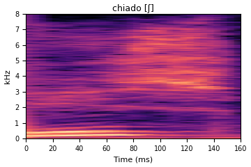
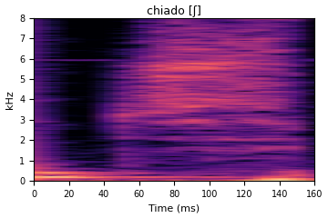
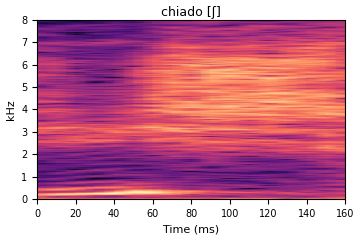
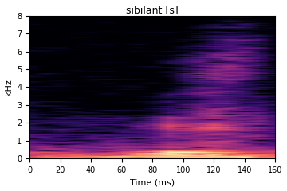
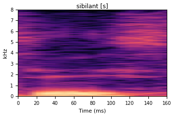
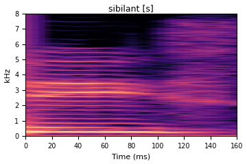
What to listen for: carioca sounds like a breathy velar or glottal fricative (similar to German “ch”); tap is a quick flap similar to the British English “r” in “very”; caipira is the retroflexed “r” of interior São Paulo, colored and retroflex.
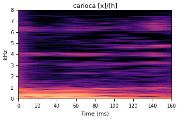
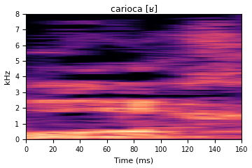
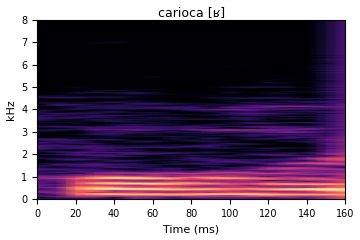
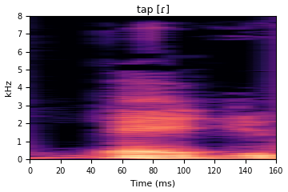
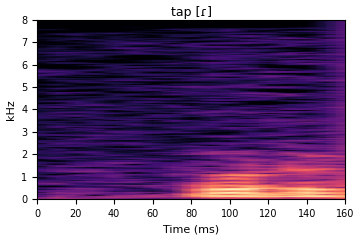
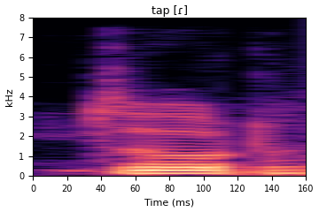
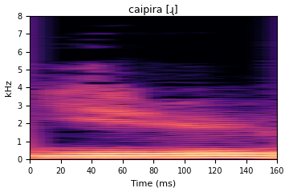
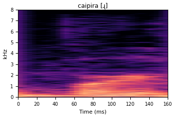
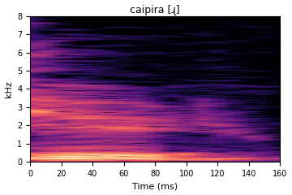
What to listen for: palatalized speakers produce “djia” / “tchia” for words like dia / tia (affricate followed by vowel); non-palatalized speakers keep a plain “d” / “t” before /i/. The spectrogram shows an extra frication burst after the stop in palatalized examples.
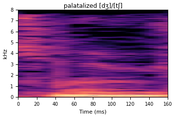
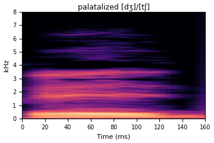
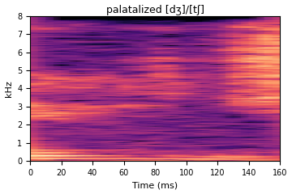
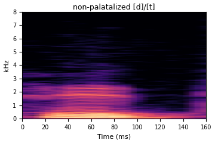
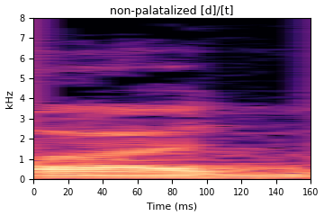
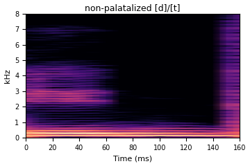
Best speaker accuracy per feature set and task (best classifier per cell selected among XGBoost, logistic regression, and linear SVM), under balanced stratified cross-validation with ~5 test speakers per fold and speaker isolation between folds. The mean ± std is computed across folds. This is the full study summarized in the paper (referenced there as companion page footnote 5).
| Feature | /s/ coda | /r/ coda | /d/–/t/ palat. |
|---|---|---|---|
| Lightweight features (ZIPA / Spec / MFCC / Allo) | |||
| ZIPA | 1.00 ±0.00 | 0.82 ±0.19 | 0.75 ±0.06 |
| Spec+ZIPA | 0.85 ±0.25 | 0.82 ±0.23 | 0.88 ±0.14 |
| ZIPA+Allo | 1.00 ±0.00 | 0.80 ±0.22 | 0.75 ±0.06 |
| Spec+ZIPA+Allo | 0.89 ±0.17 | 0.85 ±0.22 | 0.83 ±0.17 |
| MFCC+ZIPA | 0.81 ±0.15 | 0.73 ±0.23 | 0.77 ±0.18 |
| MFCC+ZIPA+Allo | 0.84 ±0.16 | 0.75 ±0.17 | 0.81 ±0.12 |
| Spec-6 | 0.74 ±0.27 | 0.63 ±0.26 | 0.77 ±0.14 |
| MFCC-39 | 0.79 ±0.13 | 0.73 ±0.23 | 0.75 ±0.06 |
| Spec+Allo | 0.74 ±0.27 | 0.73 ±0.15 | 0.67 ±0.20 |
| MFCC+Allo | 0.79 ±0.13 | 0.75 ±0.20 | 0.77 ±0.14 |
| Allo | 0.72 ±0.25 | 0.65 ±0.19 | 0.58 ±0.14 |
| XLSR-PT | |||
| XLSR-PT | 0.92 ±0.11 | 0.77 ±0.21 | 0.77 ±0.18 |
| +ZIPA | 0.95 ±0.09 | 0.75 ±0.24 | 0.88 ±0.14 |
| +Spec | 0.86 ±0.11 | 0.77 ±0.21 | 0.77 ±0.18 |
| +MFCC | 0.88 ±0.10 | 0.73 ±0.23 | 0.81 ±0.12 |
| +Allo | 0.92 ±0.11 | 0.75 ±0.15 | 0.81 ±0.12 |
| +Spec+ZIPA | 0.93 ±0.10 | 0.77 ±0.21 | 0.83 ±0.20 |
| +MFCC+ZIPA | 0.81 ±0.15 | 0.77 ±0.21 | 0.83 ±0.17 |
| +Spec+ZIPA+Allo | 0.93 ±0.10 | 0.77 ±0.21 | 0.83 ±0.20 |
| +MFCC+ZIPA+Allo | 0.84 ±0.16 | 0.77 ±0.26 | 0.88 ±0.14 |
| XLS-R | |||
| XLSR | 0.79 ±0.16 | 0.78 ±0.20 | 0.83 ±0.17 |
| +ZIPA | 0.84 ±0.16 | 0.77 ±0.21 | 0.83 ±0.17 |
| +Spec | 0.79 ±0.16 | 0.73 ±0.19 | 0.83 ±0.17 |
| +MFCC | 0.79 ±0.16 | 0.73 ±0.19 | 0.81 ±0.12 |
| +Allo | 0.82 ±0.17 | 0.77 ±0.20 | 0.83 ±0.17 |
| +Spec+ZIPA | 0.82 ±0.17 | 0.78 ±0.21 | 0.81 ±0.12 |
| +MFCC+ZIPA | 0.79 ±0.16 | 0.73 ±0.24 | 0.83 ±0.17 |
| +Spec+ZIPA+Allo | 0.82 ±0.17 | 0.77 ±0.21 | 0.83 ±0.17 |
| +MFCC+ZIPA+Allo | 0.79 ±0.16 | 0.73 ±0.24 | 0.83 ±0.17 |
| Wav2Vec 2.0 | |||
| Wav2Vec 2.0 | 0.86 ±0.17 | 0.72 ±0.15 | 0.77 ±0.14 |
| +ZIPA | 0.90 ±0.17 | 0.80 ±0.18 | 0.92 ±0.14 |
| +Spec | 0.77 ±0.14 | 0.67 ±0.20 | 0.71 ±0.18 |
| +MFCC | 0.86 ±0.17 | 0.67 ±0.22 | 0.77 ±0.14 |
| +Allo | 0.84 ±0.16 | 0.68 ±0.22 | 0.71 ±0.18 |
| +Spec+ZIPA | 0.90 ±0.17 | 0.83 ±0.17 | 0.88 ±0.14 |
| +MFCC+ZIPA | 0.84 ±0.16 | 0.73 ±0.23 | 0.83 ±0.17 |
| +Spec+ZIPA+Allo | 0.88 ±0.18 | 0.83 ±0.17 | 0.83 ±0.17 |
| +MFCC+ZIPA+Allo | 0.84 ±0.16 | 0.73 ±0.25 | 0.83 ±0.17 |
| HuBERT | |||
| HuBERT | 0.81 ±0.15 | 0.83 ±0.20 | 0.77 ±0.18 |
| +ZIPA | 0.90 ±0.17 | 0.85 ±0.23 | 0.77 ±0.18 |
| +Spec | 0.80 ±0.20 | 0.85 ±0.19 | 0.81 ±0.12 |
| +MFCC | 0.78 ±0.18 | 0.78 ±0.18 | 0.81 ±0.12 |
| +Allo | 0.81 ±0.15 | 0.83 ±0.20 | 0.77 ±0.18 |
| +Spec+ZIPA | 0.90 ±0.17 | 0.90 ±0.13 | 0.88 ±0.14 |
| +MFCC+ZIPA | 0.81 ±0.15 | 0.83 ±0.20 | 0.88 ±0.14 |
| +Spec+ZIPA+Allo | 0.90 ±0.17 | 0.87 ±0.16 | 0.79 ±0.22 |
| +MFCC+ZIPA+Allo | 0.81 ±0.15 | 0.83 ±0.20 | 0.83 ±0.17 |
| ECAPA-TDNN | |||
| ECAPA-TDNN | 0.89 ±0.17 | 0.82 ±0.19 | 0.67 ±0.10 |
| +ZIPA | 0.92 ±0.17 | 0.85 ±0.19 | 0.75 ±0.06 |
| +Spec | 0.80 ±0.23 | 0.80 ±0.22 | 0.81 ±0.12 |
| +MFCC | 0.84 ±0.18 | 0.82 ±0.22 | 0.81 ±0.12 |
| +Allo | 0.89 ±0.17 | 0.83 ±0.18 | 0.71 ±0.12 |
| +Spec+ZIPA | 0.85 ±0.25 | 0.83 ±0.21 | 0.85 ±0.09 |
| +MFCC+ZIPA | 0.84 ±0.18 | 0.77 ±0.19 | 0.75 ±0.06 |
| +Spec+ZIPA+Allo | 0.85 ±0.25 | 0.85 ±0.17 | 0.85 ±0.09 |
| +MFCC+ZIPA+Allo | 0.84 ±0.18 | 0.78 ±0.18 | 0.81 ±0.12 |
| Resemblyzer | |||
| Resemblyzer | 0.71 ±0.20 | 0.60 ±0.08 | 0.50 ±0.12 |
| +ZIPA | 0.79 ±0.24 | 0.73 ±0.26 | 0.71 ±0.18 |
| +Spec | 0.76 ±0.25 | 0.60 ±0.13 | 0.73 ±0.18 |
| +MFCC | 0.78 ±0.22 | 0.55 ±0.18 | 0.71 ±0.04 |
| +Allo | 0.78 ±0.22 | 0.62 ±0.20 | 0.56 ±0.16 |
| +Spec+ZIPA | 0.79 ±0.24 | 0.77 ±0.21 | 0.77 ±0.18 |
| +MFCC+ZIPA | 0.78 ±0.22 | 0.70 ±0.27 | 0.71 ±0.04 |
| +Spec+ZIPA+Allo | 0.79 ±0.24 | 0.78 ±0.22 | 0.73 ±0.18 |
| +MFCC+ZIPA+Allo | 0.78 ±0.22 | 0.70 ±0.27 | 0.71 ±0.04 |
Best speaker accuracy per feature set (best classifier selected per cell). Values show mean ± std across balanced stratified cross-validation folds (∼5 test speakers/fold). Heatmap colors match the paper.
@misc{leite2026accentfeatures,
title = {Extracting accent features in spoken Brazilian Portuguese
without sociolinguistic labels},
author = {Leite, Pedro H. L. and Valadares, Pedro Benevenuto and
Biscainho, Luiz W. P.},
year = {2026},
eprint = {2605.30457},
archivePrefix = {arXiv},
primaryClass = {eess.AS}
}